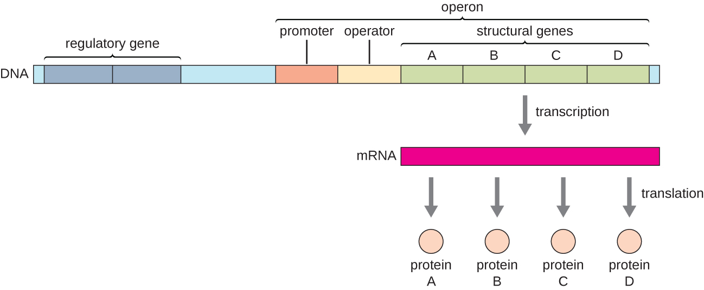
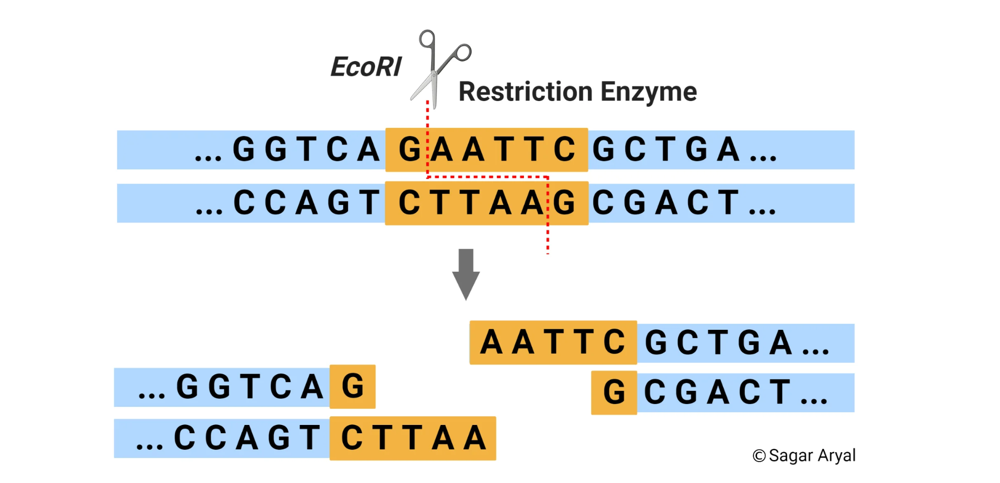
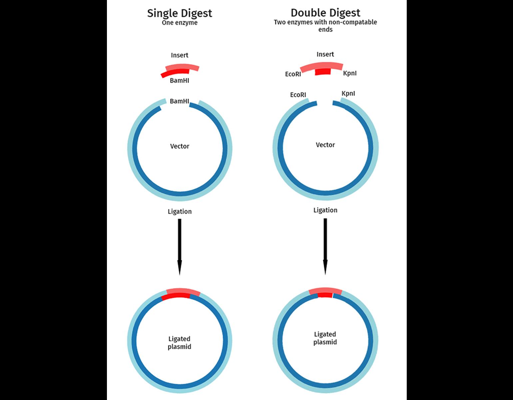
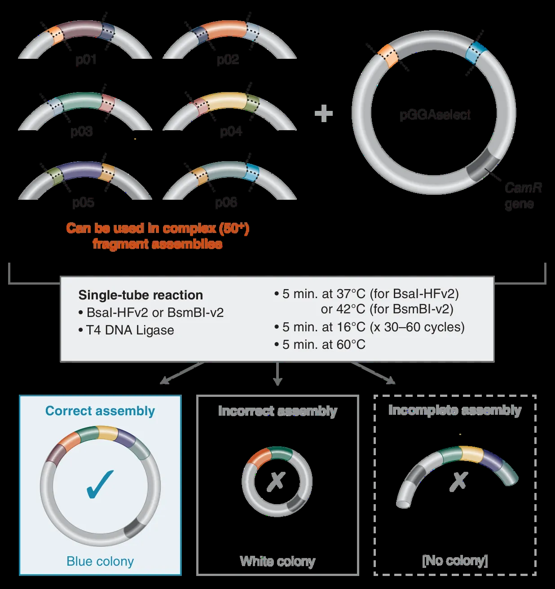

What We Contributed
Humza organized the guide around the progression from understanding biological systems to designing and constructing them. Beginning with DNA, proteins, and the Design–Build–Test–Learn (DBTL) cycle, the resource introduces the principles of genetic circuit design before examining the practical considerations involved in constructing engineered biological systems.
In particular, the guide covers:
- Gene architecture and regulation: Promoters, ribosome binding sites, coding sequences, terminators, and inducible expression systems, including examples of commonly used regulatory components.
- Plasmid design and selection: The distinction between cloning and expression plasmids, with examples such as pET-28a and bacterial T7 expression systems.
- DNA assembly: Restriction enzyme mechanisms, single and double digests, and Golden Gate Assembly using Type IIS restriction enzymes.
- Experimental reasoning: The importance of controls, documenting engineering decisions, and using experimental results to inform successive DBTL iterations.
Humza also incorporated explanatory diagrams and references to external resources, including New England Biolabs, JoVE, and OpenWetWare, allowing students to pursue individual topics in greater depth.
The result is a beginner-oriented introduction to the technical concepts that our team had to learn independently before we could meaningfully participate in experimental design.
A Collaborative Contribution to the iGEM Community
This guide forms ULP-CA's contribution to a broader open-source initiative developed in collaboration with teams NBJF and DBHS-CA, aimed at reducing the barriers to establishing competitive high school iGEM programs.
While the larger collaboration addresses the challenges of getting new teams started, our contribution focuses specifically on one of the most immediate obstacles: the gap between an interest in synthetic biology and the technical understanding required to begin research.
By documenting the knowledge we accumulated during our first year, we sought to provide future teams with a more organized starting point than the one available to us. Instead of independently assembling an introductory understanding from numerous disconnected resources, new participants can use the guide to establish a foundation before advancing to more specialized literature, laboratory protocols, and project-specific training.
Our goal is to make the first stages of iGEM research more approachable, so future teams can build upon the lessons we learned rather than having to rediscover them independently.
The complete guide · 11 source pages
Beginner’s Guide to Highschool iGEM: Research Fundamentals
Prepared By: Humza Shahzad, ULP-CA 2026 Co-Founder and Student Lead
Foreword
Hello Everyone, my name is Humza Shahzad and I am the Co-Founder of the new ULP-CA iGEM team competing in iGEM 2026. I’m a high school student in Fullerton, CA with a burning curiosity for the possibilities that synthetic biology can bring us one day. I hope this guide finds people that too want to start their research journey with more knowledge than I first had, once requiring hundreds of hours of reading research papers and designing experiments with my team to understand the fundamentals of biotech research. I’ve condensed the basics into this document and hope that all that read it truly appreciate it, as this is a testament to the very beginnings of my biotech journey and hopefully the start of yours. Onwards padawans!
The Basics:
DNA : Deoxyribose nucleic acid, a type of macromolecule (fancy talk for a BIG molecule, in which case DNA is pretty long). Uses ATCG to store the code for PROTEINS, one of the most important macromolecules in synbio!
Proteins: A very large macromolecule; made up of subunits called amino acids. Each amino acid corresponds to a codon, a group of 3 base pairs that is read when RNA is built using DNA as a template for protein production(outside of the nucleus!)
Protein Functions: Proteins are unique in that they serve the majority of active functions in the body. Proteins move muscle cells to contract, catalyze chemical reactions(these are enzymes!! ), embed in the cell membrane to act as receptors(immune cells anybody??), act as functional compounds (e.g. silk, hair, mucus, etc.), or serve regulatory functions (hemoglobin/myoglobin as oxygen transporters).
SynBio Starter Guide!
What makes Synbio so special? Synthetic biology essentially focuses on utilizing biology for certain functions. This is important in fields such as the pharmaceutical industry such as the development of a new drug, and using rigorous testing procedures in order to begin and pass clinical trials.
DBTL, or Design, Build, Test, and Learn is the reason why bioengineering gets to be called an engineering discipline. Simply, like engineers, scientists of synthetic biology have an engineering goal and create an initial design of their system, construct it(typically through recombinant gene assembly methods), run tests/assays on it, and use the information from this cycle to LEARN, therefore starting the next cycle. A good synthetic biologist always documents their engineering decisions like a normal engineer would. Ample data collection is meant to be informative for a scientist to rule out problems within their design through thought-out experiments that maintain good positive and negative controls. This is what makes science DEFENSIBLE.
Before we start, here is something very important that many people get wrong when they first start working with synbio. Biology is a heuristic system, not a binary one. By this I mean the following: heuristics is a concept in computer science that effectively means “good enough”. Biology is the product of millions upon millions of years of careful evolution, and we have acquired information about biology after very rigorous study. However, changing the delicate system of biology on the molecular level comes with its own implications, in the sense that nothing is a yes or a no. A mutation in a protein can make it semi-functional but not fully non-functional. A weak promoter could mean that less but not near none of a gene is transcribed. Introducing elements that are foreign into a bacterial genome could have implications that we won’t know how to rule out unless we have good experiments, because biology doesn’t necessarily follow all of the rules! Biological systems make mistakes, and that is the beauty of it. If they didn’t, then we wouldn’t have diseases and genetic defects now would we?
Gene Design Principles
In order to understand how to design a synthetic biology project, we must understand a few things about coding regions and sequences in DNA that don’t code for proteins.
There are key parts to a gene besides the coding region, the sequence with all necessary codons for a protein. These parts come in the following order:
- 1. Promoter: Determines how strongly a gene is expressed in terms of the amount of protein expressed and how rapidly. The standard unit for a promoter’s strength is Relative Promoter Units(RPU). Promoter sequences are the first sequence recognized by RNA Polymerase to start DNA transcription into an mRNA sequence.
- 2. Ribosome Binding Site(RBS): A non-coding region included in the final mRNA sequence. It is where a ribosome will first bind to mRNA before RNA translation.
- 3. Start Codon: The first codon of RNA that initiates protein production during RNA translation. The start codon ALWAYS corresponds to the methionine amino acid.
- 4. Coding Region: Self-explanatory :)
- 5. Stop Codon: Signals the ribosome to detach from the mRNA molecule.
- 6. Terminator: Usually placed twice in the gene in synthetic biology experiments, as it ensures that RNA polymerase detaches from DNA during transcription completely.
Key Tip: Thanks to the UC Berkeley iGEM team, we have a characterized library of promoters called Anderson Promoters, all which have varying strengths at relatively common levels used in experiments, such as 0.25, 0.5, 0.75, etc. I highly recommend considering the use of Anderson Promoters in your experiments because they are perfect for tuning of a system in terms of gene expression.
Now, although this system for protein production works, there is a fatal flaw. If one were to follow the framework for a gene above, experiments would probably not go so well in terms of protein function. This is because the promoter is in a constitutive form, meaning that it is ALWAYS on. Usually, we are engineering bacteria, and we must not forget that bacteria have other stuff to care about besides our insignificant little gene. Making a gene constitutive means that it will not stop the protein production process, and that uses copious amounts of ATP and other cellular resources that cause metabolic stress, which can contribute to protein misfolding and ultimately the very death of our cells. So what do we use? We use the operon architecture, made up of an operator and a repressor.


Fig. 1 Operon Architecture. Source(bio.libretexts.org)
With reference to Fig.1, an operon architecture is different from a normal gene architecture in that we observe the use of an operator and regulatory sequence(also known as the repressor). The regulatory sequence is a separately expressed gene that creates a repressor protein that binds to the operator sequence. By binding to the operator sequence, it acts as a roadblock for RNA polymerase, and the genes following the operator aren’t able to be transcribed. This is the “OFF” state for our genes. In order to switch our gene into the “ON” state, bacteria must first be grown to a certain density in a phase called log phase with an optical density at 600 nm, or OD600, between 0.4 and 0.6. Don’t worry about this for now, but it is very important once you step into the lab and your PI uses this term when teaching you bacterial culture. Now, where were we?
After the bacteria have reached an optimal growth phase, we add a solution of an inducing molecule. Besides containing a site to bind to the operator, repressor proteins also have a site that binds to an inducer molecule, causing a change in the shape of the repressor that forces it to detach from the DNA. In some cases, the “inducer” molecule is actually a “corepressor” molecule, in the sense that when it binds to the repressor protein, it actually ENABLES it to bind to the operator. When the concentration of a corepressor molecule decreases, so does the amount of its operator-bound repressor proteins, therefore causing us to observe the “ON” state of our gene.
TLDR: Inducer System: Inducer + Repressor = ON Corepressor System: Corepressor + Repressor = OFF Besides basic protein expression, it's important to use operator and repressor systems because it gives us something valuable: CONTROL. If we create a genetic circuit, a network of genes expressed separately, operons allow us to control how the expression of one gene affects another. For example, one gene can create an enzyme that produces two byproducts, one of which contributes to a therapeutic and another which acts as the inducer molecule for another operon, and so on. An operon can also be used as an on/off switch to gene expression.
Gene Assembly + Testing
Alright so gene structure is great and all but what's the point? How do we actually take a gene we have designed and test it in a cell? For the most part, high school iGEM teams tend to dabble only in bacteria and bacterial DNA. But why is that?
Bacteria have their own genome as well as large, circular pieces of DNA called plasmids that they can take up from their environment, or in a solution if you utilize heat shock or electroporation methods. This is how bacteria pass genes from one to another in a process called horizontal gene transfer. Scientists have taken advantage of this inherent feature of bacteria and created bacterial plasmids that are optimized as templates for gene expression.
There are two types of plasmids and they differ based on the way they replicate:
❖1. Expression Plasmid:
- ➢These are plasmids that are optimized for protein expression. They contain a sequence called an origin of replication(ori) like any plasmid that gives them a low copy number. That is, fewer copies of the plasmid are made because copying a plasmid is a metabolically stressful process, especially when our main goal is to produce a protein.
- ➢The pET series, namely pET-28(a), is the most common expression plasmid used. It has a T7 promoter, which is an incredibly strong promoter attached to the lac operon induced by the chemical IPTG.
- ➢The recommended cell line for protein expression is BL21(DE3), especially when using a T7 promoter because only BL21(DE3) cells possess the correct T7 polymerase to recognize its corresponding promoter.
❖Cloning Plasmid
- ➢These are plasmids optimized for cloning. Their ori is of a high copy number since the goal is to make more copies of the DNA. There is no template for gene architecture in a cloning plasmid, so don’t be alarmed since our goal is not to express a gene.
- ➢Why do we need to make more though? Sometimes, when we order DNA sequences to be synthesized, we don’t have enough for our desired experiments. So, we insert our coding sequences into a cloning plasmid to produce more copies of our cloning sequence. Then, we use restriction enzymes to cut out our coding sequences and insert them into an expression plasmid.
Restriction Enzymes: When DNA sequences become Legos.
When several DNA coding sequences are cloned in different plasmids and they need to be put into a singular plasmid, we must use restriction enzymes to cut out DNA at precise locations such that each cut strand is assembled into one plasmid by the hydrogen bonds made between base pairs. EcoRI is a common Type II restriction enzyme that cuts at an EcoRI site in DNA, highlighted in yellow in Fig. 2.


Fig. 2 Diagram of EcoRI Type II Restriction Enzyme
If you observe the way that EcoRI cuts at its recognition site, you can see that it leaves an overhang of 4 DNA base pairs. These are called sticky ends such that they will “stick” to another complementary 4 base pair overhang in another plasmid. Using Type II restriction enzymes is useful for gene insertion when two enzymes are used, since using the same restriction enzyme for the forward and reverse strand would prevent us from knowing the orientation the DNA has aligned in, and the wrong protein would be expressed if the DNA was reversed. This is called a double digest. This may be tricky to visualize, so I recommend watching this video from the wonderful people at Waterloo iGEM here. You may also reference Fig. 3.


Fig. 3 Single VS. Double Digests. Source: SnapGene
Well what if we have multiple fragments of DNA we need to assemble? What if we have multiple promoters, ribosome binding sites, coding sequences, and terminators that all need to be put into a specified order? That’s where my favorite kind of assembly method comes in: Golden Gate Assembly. Golden Gate Assembly is a DNA assembly method that uses a special Type IIS restriction enzyme to assemble multiple fragments of DNA into a plasmid using only one enzyme.
The reason this works is due to the mechanism of a Type IIS restriction enzyme. Like any restriction enzyme, Type IIS restriction enzymes have recognition sites. However, instead of cutting DNA at the restriction site, Type IIS enzymes cut OUTSIDE of the recognition site, producing a very unique 4 base pair overhang. If you design your DNA fragments to have matching overhangs, you can theoretically assemble hundreds of DNA fragments at once without leaving a restriction “scar”, a nonfunctional sequence of DNA left behind from a restriction digest.


Fig. 4 Golden Gate Assembly. Source: NEB
The Lab and Onwards!
Everything I’ve explained and attempted to teach is all usable in theory. However, in order to properly execute experiments and protocols in a laboratory, it is up to you to decide what procedures you need to follow. Thankfully, processes like DNA purification, protein purification, DNA assembly, and running assays are all well-laid out on sites such as New England Biolabs, SnapGene, and even the old iGEM parts registry .Here are some useful links that will help you draft up your own protocols with your mentors:
New England Biolabs Protocol Search: https://www.neb.com/en-us/tools-and-resources/search?type=Protocol
Journey of Visualized Experiments: https://www.jove.com/
OpenWetWare: https://openwetware.org/wiki/Main_Page
Best of luck with your research my fellow iGEMers. Now fly! ;)

- Humza Shahzad, ULP-CA 2026 Co-Founder
Further reading
- New England Biolabs. “Golden Gate Assembly.” NEB, DNA Assembly and Cloning.
- SnapGene. “Restriction Enzyme Cloning.” SnapGene, Restriction Enzyme Cloning Guide.
The guide is a student-authored learning resource; laboratory work requires mentor review, appropriate training, and approved protocols.